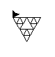

Le programme repose sur 4 fonctions principales :
Dessiner permet de tracer une courbe avec un angle et une longueur données. Elle appelle TriangleSierpinski qui elle même appelle CourbeSierpinski qui elle meme appelle RegleSierpinski.
TriangleSierpinski trace le motif initiale en fonction de Niter.
CourbeSierpinski va appeller Niter fois la "regleSierpinski" pour creer la courbe de Sierpinski.
RegleSierpinski permet le decodage de la chaine de caractere donnee
J'ai mis du temps à comprendre qu'il fallait appeler la fonction triangleSierpinski dans la fonction dessiner.
J'ai resolu ce probleme en modifiant le code python du TP pour obtenir un flocon complet.
Puis,j'ai procedé par analogie pour le tapis.
